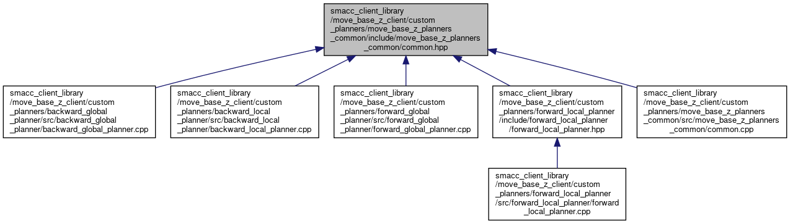

#include <iostream>#include <geometry_msgs/msg/pose_stamped.hpp>#include <geometry_msgs/msg/twist.hpp>#include <tf2_geometry_msgs/tf2_geometry_msgs.hpp>
Include dependency graph for common.hpp:

This graph shows which files directly or indirectly include this file:

Go to the source code of this file.
Functions | |
| std::ostream & | operator<< (std::ostream &out, const geometry_msgs::msg::Twist &msg) |
| std::ostream & | operator<< (std::ostream &out, const geometry_msgs::msg::Pose &msg) |
| std::ostream & | operator<< (std::ostream &out, const geometry_msgs::msg::PoseStamped &msg) |
| std::ostream & | operator<< (std::ostream &out, const geometry_msgs::msg::Point &msg) |
| std::ostream & | operator<< (std::ostream &out, const geometry_msgs::msg::Quaternion &msg) |
Function Documentation
◆ operator<<() [1/5]
| std::ostream& operator<< | ( | std::ostream & | out, |
| const geometry_msgs::msg::Point & | msg | ||
| ) |
Definition at line 139 of file common.cpp.
◆ operator<<() [2/5]
| std::ostream& operator<< | ( | std::ostream & | out, |
| const geometry_msgs::msg::Pose & | msg | ||
| ) |
Definition at line 130 of file common.cpp.
◆ operator<<() [3/5]
| std::ostream& operator<< | ( | std::ostream & | out, |
| const geometry_msgs::msg::PoseStamped & | msg | ||
| ) |
Definition at line 151 of file common.cpp.
◆ operator<<() [4/5]
| std::ostream& operator<< | ( | std::ostream & | out, |
| const geometry_msgs::msg::Quaternion & | msg | ||
| ) |
Definition at line 145 of file common.cpp.
◆ operator<<() [5/5]
| std::ostream& operator<< | ( | std::ostream & | out, |
| const geometry_msgs::msg::Twist & | msg | ||
| ) |
Definition at line 124 of file common.cpp.